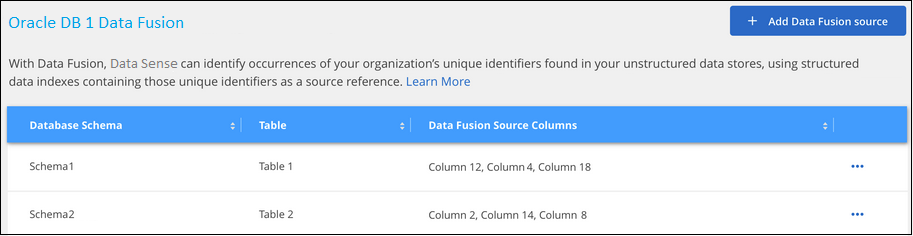
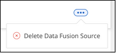
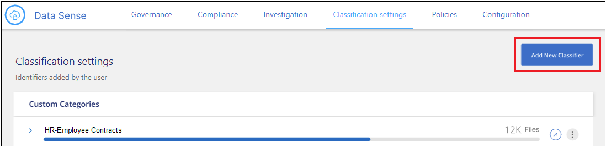
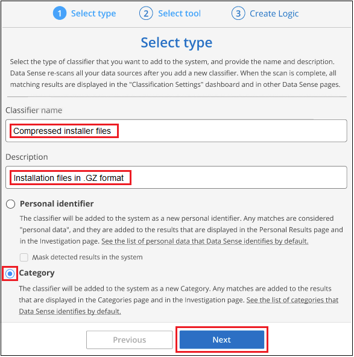

Richiedi modifiche alla documentazione
Richiedi modifiche alla documentazione Modifica questa pagina
Modifica questa pagina Scopri come collaborare
Scopri come collaborareAggiunta di identificatori di dati personali alle scansioni di classificazione BlueXP
Collaboratori
La classificazione BlueXP offre diversi modi per aggiungere un elenco personalizzato di "dati personali" che la classificazione BlueXP identificherà nelle scansioni future, fornendo un quadro completo della posizione dei dati potenzialmente sensibili in tutti i file della tua organizzazione.
-
È possibile aggiungere identificatori univoci in base a colonne specifiche nei database che si sta eseguendo la scansione.
-
È possibile aggiungere parole chiave personalizzate da un file di testo — queste parole sono identificate all’interno dei dati.
-
È possibile aggiungere un modello personale utilizzando un’espressione regolare (regex) — il regex viene aggiunto ai modelli predefiniti esistenti.
-
È possibile aggiungere categorie personalizzate per identificare dove si trovano categorie specifiche di informazioni nei dati.
Tutti questi meccanismi per aggiungere criteri di scansione personalizzati sono supportati in tutte le lingue.

|
Le funzionalità descritte in questa sezione sono disponibili solo se si è scelto di eseguire una scansione di classificazione completa sulle origini dati. Le origini dati che hanno eseguito una scansione solo mappatura non mostrano i dettagli a livello di file. |
Aggiungere identificatori di dati personali personalizzati dai database
Una funzionalità chiamata Data Fusion consente di eseguire la scansione dei dati delle organizzazioni per identificare se gli identificatori univoci dei database sono presenti in qualsiasi altra origine dati. È possibile scegliere gli identificatori aggiuntivi che la classificazione BlueXP ricerca nelle relative scansioni selezionando una o più colonne specifiche in una tabella di database. Ad esempio, il diagramma riportato di seguito mostra come i dati Fusion vengono utilizzati per eseguire la scansione di volumi, bucket e database per individuare le occorrenze di tutti gli ID cliente dal database Oracle.

Come puoi vedere, sono stati trovati due ID cliente univoci in due volumi e in un bucket S3. Verranno identificate anche le corrispondenze presenti nelle tabelle del database.
Si noti che, dal momento che si esegue la scansione dei database, qualsiasi lingua in cui i dati vengono memorizzati verrà utilizzata per identificare i dati nelle future scansioni di classificazione di BlueXP.
Devi avere "aggiunto almeno un server di database" Alla classificazione BlueXP prima di poter aggiungere origini Fusion dei dati.
-
Nella pagina di configurazione, fare clic su Manage Data Fusion (Gestisci dati) nel database in cui risiedono i dati di origine.

-
Fare clic su Add Data Fusion source (Aggiungi origine dati) nella pagina successiva.
-
Nella pagina Aggiungi origine data Fusion:
-
Selezionare lo schema del database dal menu a discesa.
-
Inserire il nome della tabella nello schema.
-
Inserire la colonna o le colonne che contengono gli identificatori univoci che si desidera utilizzare.
Quando si aggiungono più colonne, inserire il nome di ciascuna colonna o il nome della vista tabella su una riga separata.

-
-
Fare clic su Aggiungi origine Data Fusion.
La pagina di inventario di Data Fusion visualizza le colonne di origine del database configurate per la scansione con la classificazione BlueXP.

Dopo la scansione successiva, i risultati includeranno queste nuove informazioni nella dashboard di conformità nella sezione "risultati personali" e nella pagina delle indagini nel filtro "dati personali". Ciascuna colonna di origine aggiunta viene visualizzata nell’elenco dei filtri nel formato "Table.column", ad esempio Customers.CustomerID.

Eliminare un’origine Data Fusion
Se a un certo punto si decide di non eseguire la scansione dei file utilizzando una determinata origine Data Fusion, è possibile selezionare la riga di origine dalla pagina di inventario Data Fusion e fare clic su Elimina origine Data Fusion.

Aggiungere parole chiave personalizzate da un elenco di parole
È possibile aggiungere parole chiave personalizzate alla classificazione BlueXP in modo che identifichi la posizione in cui tali informazioni sono contenute nei dati. È possibile aggiungere le parole chiave inserendo ciascuna parola che si desidera venga riconosciuta dalla classificazione BlueXP. Le parole chiave vengono aggiunte alle parole chiave predefinite già utilizzate dalla classificazione BlueXP e i risultati saranno visibili nella sezione modelli personali.
Ad esempio, è possibile visualizzare i nomi dei prodotti interni in tutti i file per assicurarsi che non siano accessibili in posizioni non sicure.
Dopo aver aggiornato le parole chiave personalizzate, la classificazione BlueXP riavvia la scansione di tutte le origini dati. Una volta completata la scansione, i nuovi risultati verranno visualizzati nella dashboard di conformità della classificazione BlueXP nella sezione "risultati personali" e nella pagina delle indagini nel filtro "dati personali".
-
Dalla scheda Impostazioni classificazione, fare clic su Aggiungi nuovo classificatore per avviare la procedura guidata Aggiungi classificatore personalizzato.

-
Nella pagina Select type, inserire il nome del classificatore, fornire una breve descrizione, selezionare Personal identifier, quindi fare clic su Next.
Il nome immesso viene visualizzato nell’interfaccia utente di classificazione BlueXP come intestazione per i file sottoposti a scansione che corrispondono ai requisiti del classificatore e come nome del filtro nella pagina di analisi.
Puoi anche selezionare la casella "Mask Detected Results in the system" (maschera risultati rilevati nel sistema) in modo che il risultato completo non venga visualizzato nell’interfaccia utente. Ad esempio, è possibile nascondere i numeri completi della carta di credito o dati personali simili (la maschera appare nell’interfaccia utente come segue: "Pass:[**] **** **** ****" 3434).

-
Nella pagina Select Data Analysis Tool, selezionare Custom Keywords come metodo da utilizzare per definire il classificatore, quindi fare clic su Next.

-
Nella pagina Create Logic, immettere le parole chiave che si desidera riconoscere, ciascuna parola su una riga separata, quindi fare clic su Validate.
La schermata seguente mostra i nomi dei prodotti interni (diversi tipi di gufi). La ricerca della classificazione BlueXP per questi elementi non fa distinzione tra maiuscole e minuscole.

-
Fare clic su Done e la classificazione BlueXP inizia a eseguire una nuova scansione dei dati.
Una volta completata la scansione, i risultati includeranno queste nuove informazioni nella dashboard di conformità nella sezione "risultati personali" e nella pagina delle indagini nel filtro "dati personali".

Come potete vedere, il nome del classificatore viene utilizzato come nome nel pannello risultati personali. In questo modo è possibile attivare diversi gruppi di parole chiave e visualizzare i risultati per ciascun gruppo.
Aggiungere identificatori di dati personali personalizzati utilizzando un regex
È possibile aggiungere un modello personale per identificare informazioni specifiche nei dati utilizzando un’espressione regolare personalizzata (regex). Ciò consente di creare un nuovo regex personalizzato per identificare nuovi elementi di informazioni personali che non esistono ancora nel sistema. Il regex viene aggiunto ai modelli predefiniti esistenti già utilizzati dalla classificazione BlueXP e i risultati saranno visibili nella sezione modelli personali.
Ad esempio, è possibile visualizzare la posizione in cui gli ID prodotto interni sono menzionati in tutti i file. Se l’ID prodotto ha una struttura chiara, ad esempio, si tratta di un numero a 12 cifre che inizia con 201, è possibile utilizzare la funzione regex personalizzata per cercarlo nei file. L’espressione regolare per questo esempio è {9} b.
Dopo aver aggiunto il regex, la classificazione BlueXP riavvia la scansione di tutte le origini dati. Una volta completata la scansione, i nuovi risultati verranno visualizzati nella dashboard di conformità della classificazione BlueXP nella sezione "risultati personali" e nella pagina delle indagini nel filtro "dati personali".
Vedere https://regex101.com/ se hai bisogno di assistenza nella creazione dell’espressione regolare di cui hai bisogno.
-
Dalla scheda Impostazioni classificazione, fare clic su Aggiungi nuovo classificatore per avviare la procedura guidata Aggiungi classificatore personalizzato.
-
Nella pagina Select type, inserire il nome del classificatore, fornire una breve descrizione, selezionare Personal identifier, quindi fare clic su Next.
Il nome immesso viene visualizzato nell’interfaccia utente di classificazione BlueXP come intestazione per i file sottoposti a scansione che corrispondono ai requisiti del classificatore e come nome del filtro nella pagina di analisi. Puoi anche selezionare la casella "Mask Detected Results in the system" (maschera risultati rilevati nel sistema) in modo che il risultato completo non venga visualizzato nell’interfaccia utente. Ad esempio, è possibile nascondere i numeri completi della carta di credito o dati personali simili.

-
Nella pagina Select Data Analysis Tool, selezionare Custom Regular Expression come metodo da utilizzare per definire il classificatore, quindi fare clic su Next.

-
Nella pagina Create Logic, immettere l’espressione regolare e le parole di prossimità, quindi fare clic su Done.
-
È possibile immettere qualsiasi espressione regolare legale. Fare clic sul pulsante Validate (convalida) per verificare che la classificazione BlueXP sia valida e che non sia troppo ampia, il che significa che restituirà troppi risultati.
-
In alternativa, è possibile inserire alcune parole di prossimità per migliorare la precisione dei risultati. Si tratta di parole che in genere si trovano entro 300 caratteri del modello che si sta cercando (prima o dopo il modello trovato). Inserire ciascuna parola o frase su una riga separata.

-
Il classificatore viene aggiunto e la classificazione BlueXP inizia a ripetere la scansione di tutte le origini dati. Viene visualizzata nuovamente la pagina Custom Classifier (classificatori personalizzati) in cui è possibile visualizzare il numero di file corrispondenti al nuovo classificatore. I risultati della scansione di tutte le origini dati richiederanno del tempo a seconda del numero di file da sottoporre a scansione.

Aggiungere categorie personalizzate
La classificazione BlueXP prende i dati che scansionano e li divide in diversi tipi di categorie. Le categorie sono argomenti basati sull’analisi di intelligenza artificiale del contenuto e dei metadati di ciascun file. "Vedere l’elenco delle categorie predefinite".
Le categorie possono aiutarti a capire cosa accade con i tuoi dati mostrando i tipi di informazioni di cui disponi. Ad esempio, una categoria come resumes o contratti dipendente può includere dati sensibili. Quando si analizzano i risultati, è possibile che i contratti dei dipendenti siano memorizzati in una posizione non sicura. A questo punto, è possibile correggere il problema.
È possibile aggiungere categorie personalizzate alla classificazione BlueXP in modo da identificare dove si trovano le categorie di informazioni uniche per il proprio data estate nei dati. È possibile aggiungere ciascuna categoria creando file di "training" che contengono le categorie di dati che si desidera identificare, quindi fare in modo che la classificazione BlueXP scansioni tali file per "apprendere" attraverso l’ai in modo che possa identificare tali dati nelle origini dati. Le categorie vengono aggiunte alle categorie predefinite esistenti già identificate dalla classificazione BlueXP e i risultati sono visibili nella sezione Categorie.
Ad esempio, è possibile vedere dove si trovano i file di installazione compressi in formato .gz nei file in modo da poterli rimuovere, se necessario.
Dopo aver aggiornato le categorie personalizzate, la classificazione BlueXP riavvia la scansione di tutte le origini dati. Una volta completata la scansione, i nuovi risultati verranno visualizzati nella dashboard di conformità della classificazione BlueXP nella sezione "Categorie" e nella pagina delle indagini nel filtro "Categoria". "Scopri come visualizzare i file in base alle categorie".
È necessario creare un minimo di 25 file di training contenenti esempi delle categorie di dati che si desidera vengano riconosciute dalla classificazione BlueXP. Sono supportati i seguenti tipi di file:
.CSV, .DOC, .DOCX, .GZ, .JSON, .PDF, .PPTX, .RTF, .TXT, .XLS, .XLSX, Docs, Sheets, and Slides
I file devono essere di almeno 100 byte e devono trovarsi in una cartella accessibile dalla classificazione BlueXP.
-
Dalla scheda Impostazioni classificazione, fare clic su Aggiungi nuovo classificatore per avviare la procedura guidata Aggiungi classificatore personalizzato.
-
Nella pagina Select type, inserire il nome del classificatore, fornire una breve descrizione, selezionare Category, quindi fare clic su Next.
Il nome immesso viene visualizzato nell’interfaccia utente di classificazione BlueXP come intestazione per i file sottoposti a scansione che corrispondono alla categoria di dati che si sta definendo e come nome del filtro nella pagina di analisi.

-
Nella pagina Create Logic, assicurarsi di aver preparato i file di apprendimento, quindi fare clic su Select Files (Seleziona file).

-
Inserire l’indirizzo IP del volume e il percorso in cui si trovano i file di training, quindi fare clic su Aggiungi.

-
Verificare che i file di training siano stati riconosciuti dalla classificazione BlueXP. Fare clic su x per rimuovere i file di training che non soddisfano i requisiti. Quindi fare clic su fine.

La nuova categoria viene creata in base alla definizione dei file di training e aggiunta alla classificazione BlueXP. Quindi, la classificazione BlueXP inizia a ripetere la scansione di tutte le origini dati per identificare i file che rientrano in questa nuova categoria. Viene visualizzata nuovamente la pagina Custom Classifier (classificatori personalizzati) in cui è possibile visualizzare il numero di file corrispondenti alla nuova categoria. I risultati della scansione di tutte le origini dati richiederanno del tempo a seconda del numero di file da sottoporre a scansione.
Visualizzare i risultati dei classificatori personalizzati
È possibile visualizzare i risultati da qualsiasi classificatore personalizzato nella dashboard di conformità e nella pagina di analisi. Ad esempio, questa schermata mostra le informazioni corrispondenti nella dashboard di conformità nella sezione "risultati personali".

Fare clic su  Per visualizzare i risultati dettagliati nella pagina delle analisi.
Per visualizzare i risultati dettagliati nella pagina delle analisi.
Inoltre, tutti i risultati del classificatore personalizzato vengono visualizzati nella scheda classificatori personalizzati e i primi 6 risultati del classificatore personalizzato vengono visualizzati nella dashboard di conformità, come mostrato di seguito.

Gestire classificatori personalizzati
È possibile modificare qualsiasi classificatore personalizzato creato utilizzando il pulsante Edit Classifier (Modifica classificatore).
Se poi decidi di non aver bisogno della classificazione BlueXP per identificare i modelli personalizzati aggiunti, puoi utilizzare il pulsante Delete Classifier (Elimina classificatore) per rimuovere ogni elemento.